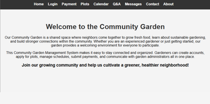
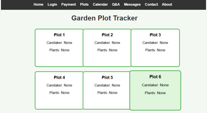
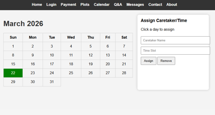
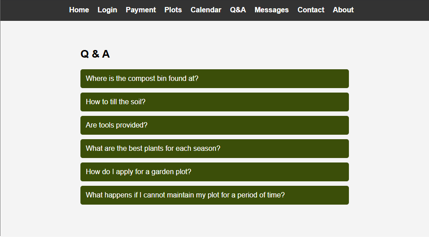
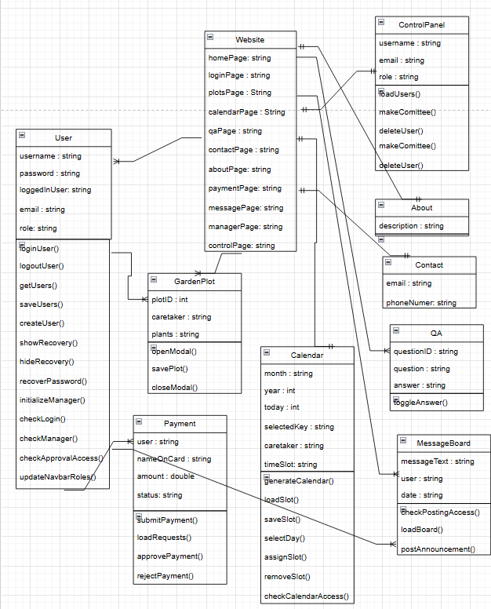
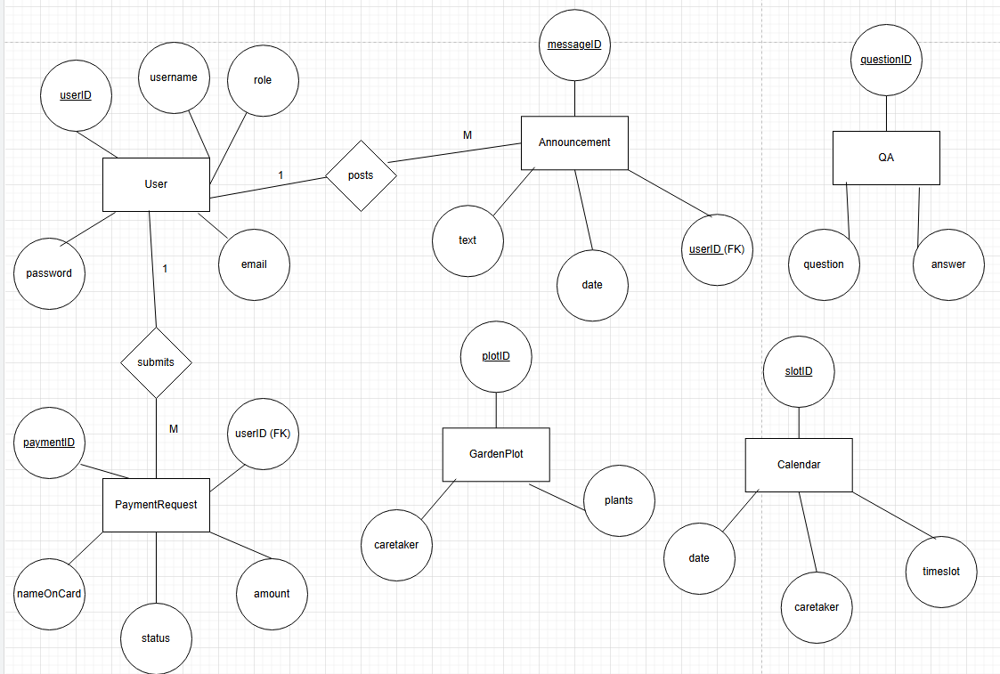

Community Garden Management System
Team software engineering project at Lamar University. A browser-based prototype for coordinating a shared community garden.
System overview
The prototype combines account registration, garden plot tracking, scheduling, announcements, Q&A and simulated payment approvals. Members, committee members and managers have different capabilities. Browser localStorage preserves demonstration data, while a proposed relational SQL schema models a future backend.
My role: Documentation lead. I helped communicate requirements and system behavior, prepare project documentation and coordinate with teammates during the development process.
Educational prototype only: there is no live payment processing or secure production authentication. Source files are available for review, not as a deployed login/payment system.
Original project screenshots
Extracted from the original Spring 2026 team project report, Figure 4 (interface overview).








System design




Lessons learned
The project illustrates how requirements, user-interface design, data modeling, testing and documentation fit together. A future production version would need a secure backend, password hashing, server-side access controls and a proper payment provider.
Team project evidence; not a claim of sole authorship. Source excerpts include the original prototype files with demo credentials redacted.
GitHub project folder